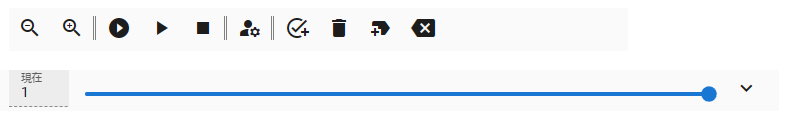
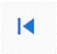
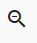
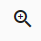
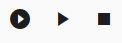
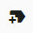

12.7. A few things about timeline display
We will explain the timeline toolbar.
Note
The  and  buttons have been removed because they can be replaced with other operations.
buttons have been removed because they can be replaced with other operations.
-  Shrink timeline view
Make the timeline display compact.
-  Expand timeline view
Resize the timeline display to normal size. This is the standard size.

-  play from beginning, play/pause, stop
It has the same function as the button on the animation tab of the ribbon bar.
 load this frame
load this frameImmediately read the contents of the keyframes of all timelines (rolls) corresponding to the currently selected frame position, and restore poses and properties. Selecting a frame position normally restores it automatically, but this button manually calls it.
※設定の
フレームを選択する時、プレビューするがオフの場合のみ表示されます。- 現座のキーフレームのプロパティを開く
Opens the keyframe settings screen for the currently selected timeline.
- Register to key frame
Registers a keyframe on the currently selected timeline. Unlike the same button on the ribbon bar, this one registers immediately without a registration window.
- Delete keyframe
Deletes the currently selected timeline keyframe.
-  Insert an empty frame at the current position
Inserts an empty frame into all timelines at the position of the currently selected frame number. This shifts all keyframes after this frame number to the right by one.
 delete current frame position
delete current frame position- Deletes the currently selected frame position of all timelines. Since this involves deleting a frame position, not just deleting a keyframe, all keyframes after this frame will be shifted one by one to the left.Also, please note that if there is a keyframe at the current position, it will be deleted together.
- Currently selected frame number
Displays the current frame number.
 Seek Bar
Seek BarMove the frame position to any position on the timeline. The size of this seek bar does not change even if the number of frames increases or decreases.
IfPreview when selecting a framein the settings is on, you can preview the animation frame by frame by moving it slowly. (some properties are not previewed)
Warning
Due to the interlocking specifications of HTML and WebGL, the preview may not keep up if you move it too quickly.
 Show/hide timeline cast (object)
Show/hide timeline cast (object)You can hide the cast of the selected timeline. IK markers will still be visible when hidden. (If you select another cast, even the IK marker will not be displayed)